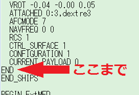
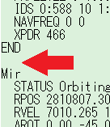
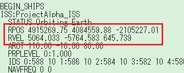
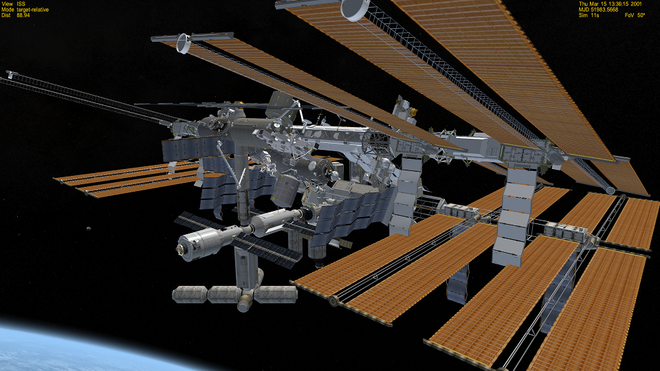

シナリオファイルの直接編集
Orbiterのシナリオファイル（拡張子が.scnのファイル）は、メモ帳などのテキストエディタで直接編集できます。
今回は例題として、DG to ISSシナリオのISSをISS A to Zに入れ替える方法を解説します。
モジュールをコピーする
orbiter\Scenarios\Checklistsフォルダにある、Mission 1 - DG to ISS.scnをメモ帳で開く。
同時に、ISS AtoZ.scnをメモ帳で開く。
BEGIN_SHIPSからEND_SHIPSのあいだに、シナリオに登場する宇宙船が記述されている。
ISS AtoZ.scnを見て、
BEGIN_SHIPSの次の行（Zarya:ISSR\Zarya）から
END_SHIPSの手前（END）までのすべての行を選択してコピーする。

DG to ISS.scnを見て、以下の2行のあいだに改行を入れる。
END
Mir
コピーした行を、この空行に貼り付ける。
宇宙船の名前からENDまでがひとまとまりになっているので、このあいだに割りこまなければどこでもかまいません。
軌道要素をコピーする
ISS:ProjectAlpha_ISSの下にある、以下の2行をコピーする。
RPOS 4915269.75 4084559.88 -2105227.01
RVEL 5064.033 -5764.583 645.739
Zarya:ISSR\Zarya以下の該当する行を削除して上書き。
ほかのモジュールについてはそのままで問題ありません。
RPOSが宇宙船の位置、RVELが軌道を決定します。
この状態で、いったん適当な名前をつけて（拡張子は.scn）、Scenariosフォルダに保存する。

このシナリオをプレイして、F3キーを押してISSの状態を確認します。
両者が以下の画像のように、重ね合わせの状態になっていれば成功です。

もとのISSを削除すれば、入れ替えは完了です。